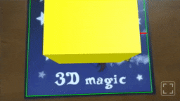

A-Frame plugin
Documentation of the A-Frame plugin. Study the demos for elaborate examples.
Since: 0.3.0
Basics
Example
A basic augmented scene can be constructed as follows:
<a-scene encantar="stats: true; gizmos: true">
<!-- Sources of data -->
<ar-sources>
<ar-camera-source></ar-camera-source> <!-- webcam -->
</ar-sources>
<!-- Trackers -->
<ar-trackers>
<ar-image-tracker>
<ar-reference-image name="mage" src="mage.png"></ar-reference-image>
</ar-image-tracker>
</ar-trackers>
<!-- AR Viewport -->
<ar-viewport></ar-viewport>
<!-- Virtual camera for AR -->
<ar-camera></ar-camera>
<!-- Root node: this will be displayed in AR -->
<ar-root reference-image="mage">
<a-box color="yellow" position="0 0 0.5"></a-box>
</ar-root>
</a-scene>

encantar
The encantar component enchants <a-scene>, so that it displays content in AR.
Properties
mode: string. The session mode. Defaults to"immersive".stats: boolean. Whether or not to display the built-in stats panel. It's useful during development. Defaults tofalse.gizmos: boolean. Whether or not to display the gizmos. Defaults tofalse.autoplay: boolean. Whether or not to start the AR session automatically. Defaults totrue.
Example
ar-root
The <ar-root> primitive sets up a node of the virtual scene that is automatically aligned to the physical scene. Simply put, children of this node will augment physical reality. <ar-root> must be a direct child of <a-scene>. It does not have to be unique. See also: ar-camera.
Properties
reference-image: string. The name of a reference image or the empty string. This node will be matched to the specified reference image, or to any reference image if this property is the empty string. Defaults to the empty string. See also: ar-reference-image.
Example
<a-scene encantar>
...
<!-- Matches only the specified reference image -->
<ar-root reference-image="mage">
...
</ar-root>
<!-- Matches any reference image -->
<ar-root>
...
</ar-root>
...
</a-scene>
Visualization
ar-viewport
The <ar-viewport> primitive sets up the viewport that will be linked to the AR session. It must be unique and a direct child of <a-scene>. See also: ar-hud.
Properties
resolution: string. The resolution of the viewport, which corresponds to the resolution of the virtual scene. See also: Resolution.style: string. The style of the viewport.fullscreen-ui: component. A component that controls the built-in fullscreen button. This button included as a convenience if the fullscreen mode is available on the target platform. The following properties are available:enabled: boolean. Whether or not to display the fullscreen button. Defaults totrue.
Example
ar-hud
The <ar-hud> primitive sets up a Heads Up Display, a 2D overlay that is displayed in front of the augmented scene. It's meant to contain HTML elements. Additionally, it must be a direct child of <ar-viewport>. See also: ar-viewport.
Example
<ar-viewport>
<ar-hud>
<!-- This will be displayed in front of the augmented scene -->
<button id="example-button">Tap me</button>
</ar-hud>
</ar-viewport>
ar-camera
<ar-camera> sets up a virtual camera that is ready for AR. It should be unique and a direct child of <a-scene>. Do not confuse it with <a-camera>, the standard camera from A-Frame. See also: ar-root.
Example
Sources
ar-sources
The <ar-sources> primitive is used to specify the sources of data that will be linked to the AR session. It must be unique and a direct child of <a-scene>.
Example
ar-camera-source
<ar-camera-source> sets up a CameraSource, which is source of data linked to a webcam. It must be a direct child of <ar-sources>.
Properties
resolution: string. The preferred resolution of the camera. See also: Resolution.facing-mode: string. The preferred camera on mobile devices. Typically"environment"(rear camera) or"user"(front camera). Defaults to"environment".
Example
ar-video-source
<ar-video-source> sets up a VideoSource, which is a source of data linked to a <video> element. It must be a direct child of <ar-sources>.
Properties
video: selector. A selector of a<video>element.
Example
<ar-sources>
<ar-video-source video="#my-video"></ar-video-source>
</ar-sources>
...
<!-- External assets -->
<video id="my-video" hidden muted loop playsinline autoplay>
<source src="my-video.webm" type="video/webm" />
<source src="my-video.mp4" type="video/mp4" />
</video>
ar-canvas-source
<ar-canvas-source> sets up a CanvasSource, which is a source of data linked to a <canvas> element. It must be a direct child of <ar-sources>.
Properties
canvas: selector. A selector of a<canvas>element.
ar-pointer-source
<ar-pointer-source> sets up a PointerSource, a source of pointer-based input. It must be a direct child of <ar-sources>. See also: ar-pointer-tracker.
Since: 0.4.0
Example
Trackers
ar-trackers
The <ar-trackers> primitive is used to specify the trackers that will be linked to the AR session. It must be unique and a direct child of <a-scene>.
Example
ar-image-tracker
<ar-image-tracker> sets up an ImageTracker, which is used to track images in a video. You must include at least one <ar-reference-image> as a direct child. See also: ar-reference-image, ar-camera-source, ar-video-source.
Properties
resolution: string. The resolution of the tracker. See also: Resolution.
Example
<ar-trackers>
<ar-image-tracker resolution="md">
<ar-reference-image name="mage" src="mage.png"></ar-reference-image>
<ar-reference-image name="magic" src="magic.png"></ar-reference-image>
</ar-image-tracker>
</ar-trackers>
ar-reference-image
<ar-reference-image> defines a ReferenceImage to be used by an image tracker. It must be a direct child of <ar-image-tracker>. See also: ar-image-tracker.
Properties
name: string. The name of the reference image. You may link it with<ar-root>. Names must be unique. See also: ar-root.src: string. Path to the image.
Example
<ar-image-tracker>
<ar-reference-image name="mage" src="mage.png"></ar-reference-image>
</ar-image-tracker>
ar-pointer-tracker
<ar-pointer-tracker> sets up a PointerTracker, which is used to track pointer-based input. It must be a direct child of <ar-trackers>. See also: ar-pointer-source, pointers.
Since: 0.4.0
Properties
space: string. The space in which pointers will be located. Since: 0.4.1
Example
AR System
ar
The ar system conveniently exposes useful objects and methods in JavaScript. It may be accessed from any component by writing this.el.sceneEl.systems.ar.
Example
AFRAME.registerComponent('my-component', {
// ...
tick()
{
const scene = this.el.sceneEl;
const ar = scene.systems.ar;
const session = ar.session;
// ...
},
// ...
});
session
ar.session: Session | null
The AR Session. If the AR session hasn't been started, this will be null.
frame
ar.frame: Frame | null
The current Frame. If the AR scene isn't initialized, this will be null.
viewer
ar.viewer: Viewer | null
A reference to the Viewer of the current frame, if any.
Since: 0.4.0
pointers
ar.pointers: TrackablePointer[]
The TrackablePointers of the current frame, if any. Make sure to add a <ar-pointer-tracker> in order to use these. See also: ar-pointer-tracker.
Since: 0.4.0
utils
ar.utils: object
Utilities for AR.
Since: 0.4.0
Utilities
convertVector2
ar.utils.convertVector2(v: Vector2): THREE.Vector2
Convert a Vector2 into a THREE.Vector2.
Since: 0.4.0
Arguments
v: Vector2. A 2D vector.
Returns
A corresponding THREE.Vector2.
convertVector3
ar.utils.convertVector3(v: Vector3): THREE.Vector3
Convert a Vector3 into a THREE.Vector3.
Since: 0.4.0
Arguments
v: Vector3. A 3D vector.
Returns
A corresponding THREE.Vector3.
convertQuaternion
ar.utils.convertQuaternion(q: Quaternion): THREE.Quaternion
Convert a Quaternion into a THREE.Quaternion.
Since: 0.4.0
Arguments
q: Quaternion. A quaternion.
Returns
A corresponding THREE.Quaternion.
convertRay
ar.utils.convertRay(r: Ray): THREE.Ray
Convert a Ray into a THREE.Ray.
Since: 0.4.0
Arguments
r: Ray. A ray.
Returns
A corresponding THREE.Ray.
Events
The events below are emitted on the scene.
arready
The main loop of the AR scene has been set up. This takes place just after the AR session starts.
Since: 0.4.2. Previously, this event was called ar-started.
Details
ar: object. The ar system.
arsessionended
The AR session has ended.
Since: 0.4.2
Details
ar: object. The ar system.
artargetfound
An image target has been found.
Since: 0.4.2
Details
referenceImage: ReferenceImage. The reference image that is linked to the target.ar: object. The ar system.
artargetlost
An image target has been lost.
Since: 0.4.2
Details
referenceImage: ReferenceImage. The reference image that is linked to the target.ar: object. The ar system.